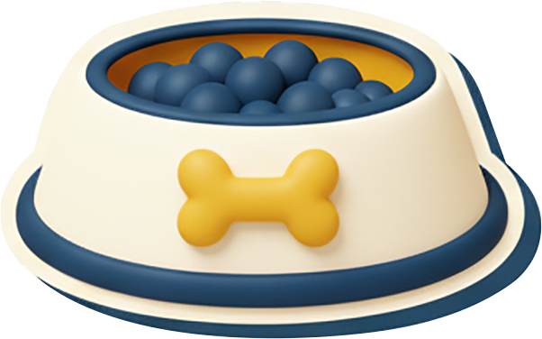
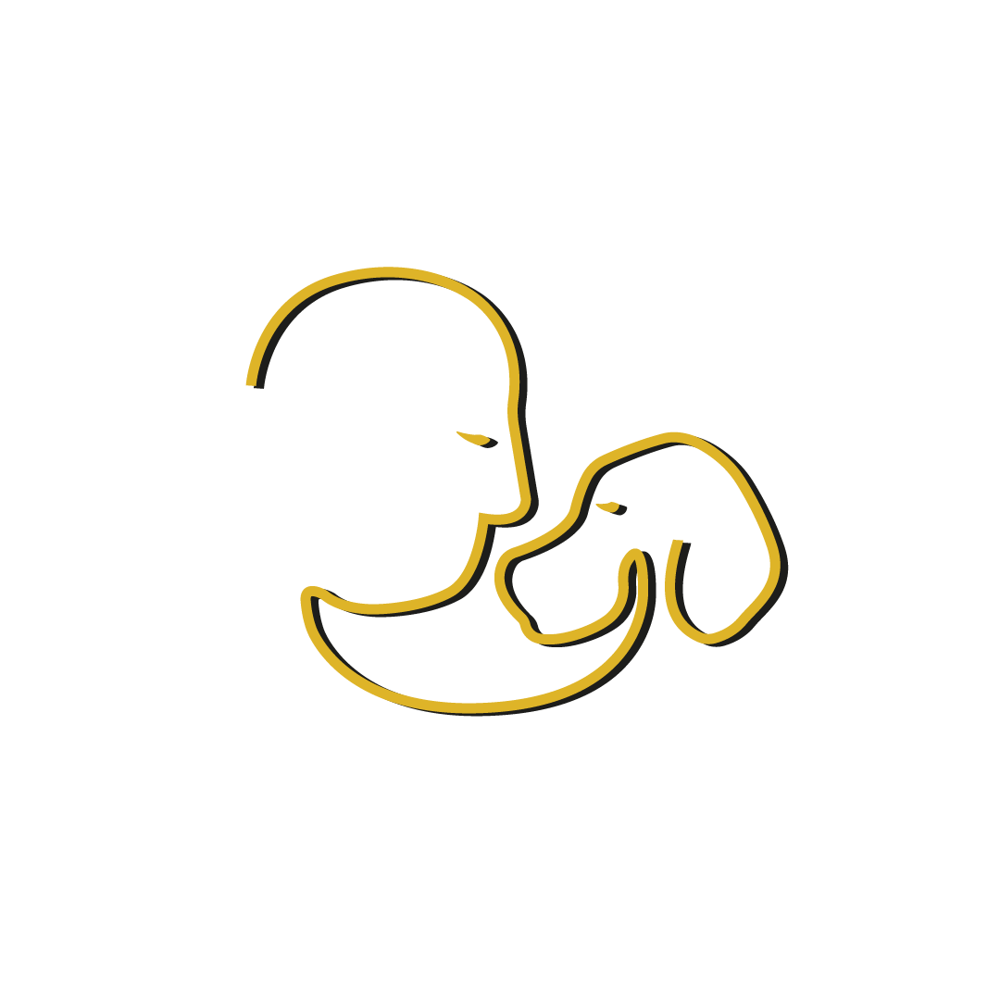

Início Visão geral do dia
—
AD

—
Peludinhos hoje

—
No Day Care

—
Na Auaulândia
—
Em adaptação
Peludinhos frequentes do Day Care. Clique no nome para ver e editar a ficha completa. Quem saiu fica em Relatórios › Inativos.
| Nº | Peludinho | Raça | Vem | Dias | Tutor | Idade |
|---|
Registro do primeiro mês / adaptação. Marque como o peludinho passou o dia — rápido, só tocando.
Como foi a adaptação hoje?
Amora · 04/06/2026 · 2º dia de adaptação
Farrogeou (rosnou)?
Deixou ser cheirado?
Cheirou os outros?
Estava retraído?
Estava à vontade?
Brincou?
Pediu colo?
Ficou atrás de alguém?
Foi para as portas?
Chorou?
Tomou água?
Fez xixi?
Fez cocô?
Chamada · hoje
Toque VEIO ou FALTOU em cada peludinho. A lista de faltas vai para a Gestão. Toque no card para ver a ficha.
0
Hóspedes hoje
0
Moradora · Repolho
Selecione o peludinho hospedado para registrar a passagem de plantão. Turnos: Diurno 07h–19h · Noturno 19h–07h.
Protocolo do Plantão
Regras imprescindíveis — valem durante todo o plantão.
- Ler com atenção o Check-in de hospedagem de cada peludinho. Qualquer dúvida, ligue: 31 99764-4296 ou 31 99111-1826.
- Gerar bem-estar aos FILHOts.
- Garantir que a alimentação seja dada corretamente — temos diversos peludinhos com alergias severas.⚠ NENHUMA ALIMENTAÇÃO PODE SER TROCADA
- Garantir que o peludinho receba corretamente o medicamento, caso necessário.
- O plantonista não pode sair da empresa enquanto estiver no horário de plantão.
Antes de sair — Plantão Noturno
Confirme cada item abaixo. Ao terminar, toque em salvar.
Check-in da estadia. Busque o FILHOt que está chegando. No retorno, a ficha já vem pré-preenchida da última estadia — a Consultora só confere e ajusta. Se for a primeira vez dele na Zêluz, use Novo Hóspede.
Busca no cadastro-mestre (mesmo do Day Care). A lista aparece conforme você digita.
Conferência do check-in. Confira pertences, ração e medicação de cada hóspede antes de liberar a estadia. Nenhum item crítico fecha sem o V verde — e fica registrado quem conferiu e quando.
Check-out da estadia. O caminho inverso: o monitor confere tudo que vai voltar (pertences, ração/medicação que sobrou, o que o tutor mandou e o que foi comprado aqui) e desce com o FILHOt para a recepção. A recepção confere junto com o tutor, o tutor assina e recebe o PDF.
Avisos de estoque de medicação. Quando um remédio de um hóspede está acabando, o aviso chega aqui — rastreado. Registre cada providência (liguei para o tutor, ele traz amanhã) até resolver. Nada verbal: tudo fica escrito, com quem, quando e o que foi feito.
Avisos de ração
Ração insuficiente para a estadia. Gerado pela Conferência Check-in quando a ração pesada não cobre os dias hospedados. Mesmo padrão pendente → resolvido — registre a providência até resolver.
Cuidado Vet. Busque o FILHOt que você vai examinar — hóspede ou aluno do Day Care. Abra a ficha para registrar a consulta, a observação para o tutor e prescrever. A consulta é a fonte que cria, altera ou suspende a medicação — desce viva e dispara os alarmes.
Agenda
Calendário de frequência e reservas — próxima etapa.
Peludinhos que saíram do Day Care. O cadastro e o histórico ficam guardados aqui. Clique no nome para ver a ficha completa.
| Nº | Peludinho | Tutor | Data da saída | Motivo da saída |
|---|

Relatório de Aulunos
Frequência e presença dos aulunos do Day Care — próxima etapa.
Relatório de Vacinas
Carteira de vacinação e vencimentos — próxima etapa.
Rotina de abertura do turno — Monitor 1. Marque cada item conforme executa. Fica registrado com horário e quem fez.
Banco de atividades dos monitores. A Gestão pode acrescentar ou remover. Depois cada atividade é distribuída entre os 6 monitores.
Gestão dos monitores. Nomeie cada monitor, defina a senha e o horário de entrada/saída. As mudanças valem na hora, em todos os aparelhos — sem precisar de programador.
Área restrita à Gestão. Relatório completo das senhas de acesso de todas as pessoas. A Supervisão e a equipe não têm acesso a esta lista.
Relatório de senhas de acesso
A senha que cada pessoa digita para entrar no sistema, da Gestão à equipe. Esta lista é gerada automaticamente do cadastro — sempre atualizada.
Renovação de Planos
Vencidos primeiro. Toque no peludinho para abrir a ficha na aba Plano e renovar.
Painel do Dia. Visão completa de como o dia transcorreu: presença, almoço, atividades e — o mais importante — se cada protocolo foi cumprido, no horário, e por quem. Esta tela só observa: não altera nada.
—
Carregando o dia…
Sair
No sistema real, encerra a sessão com segurança.